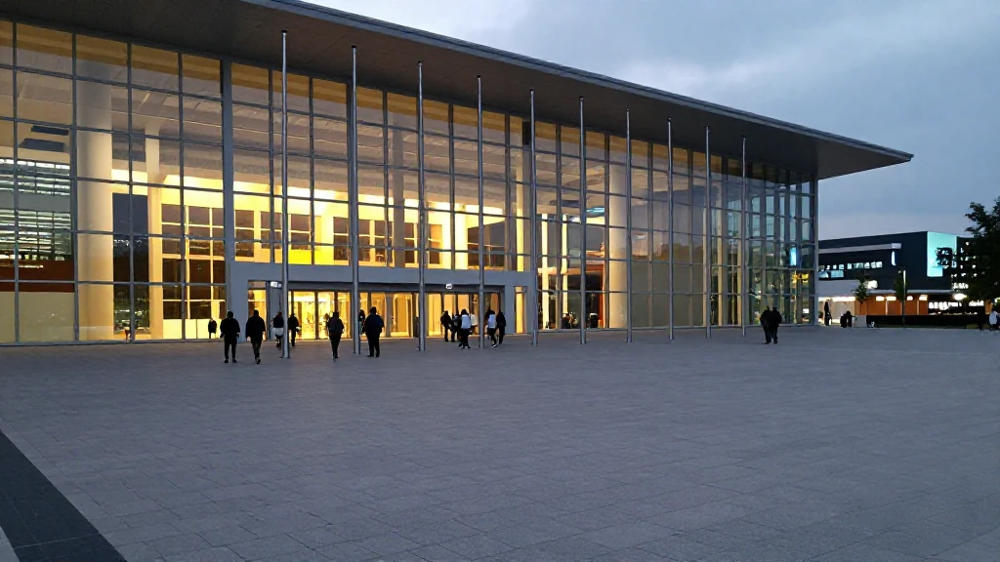
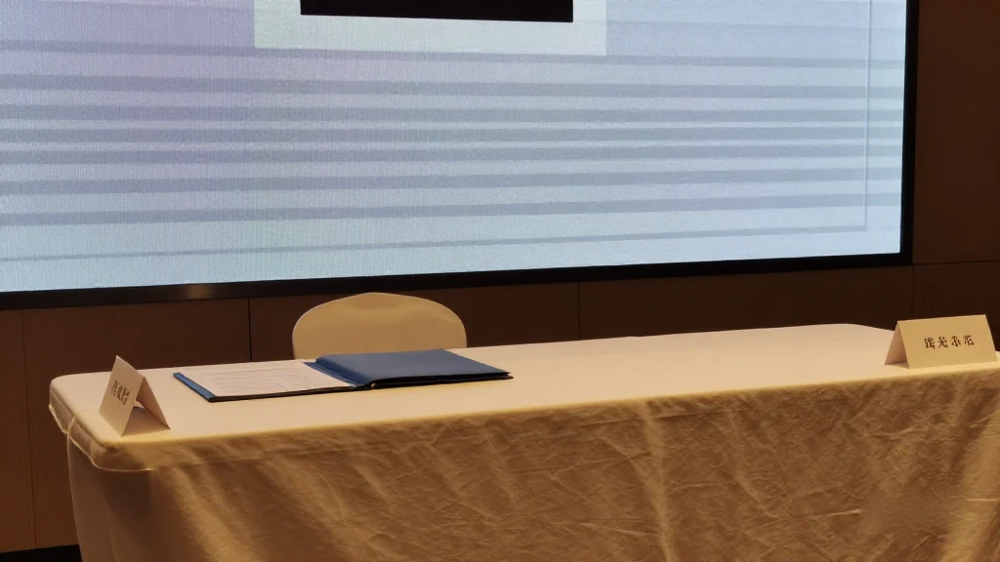
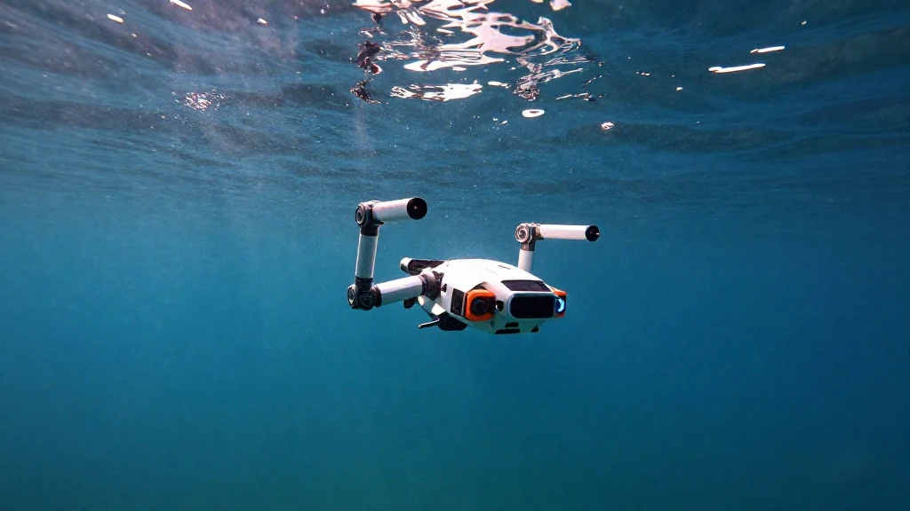
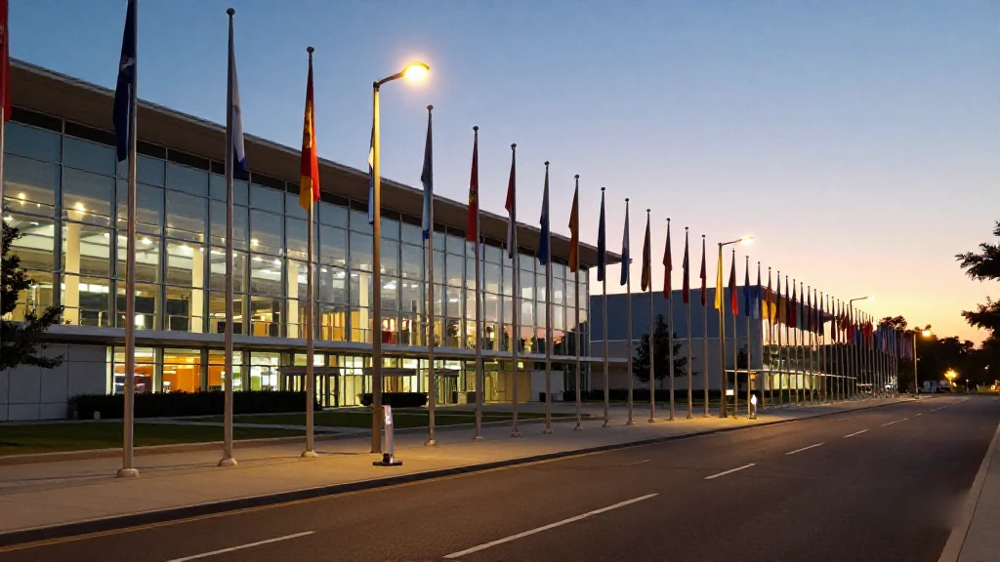

圖片由 AI輔助創作Image by AI
【鄭哥點評】欄目：鄭哥博客點評｜日期：2026-11-04
今日五條，三條深圳、兩條廣州：一份「一人公司」制度清單、一場簽出1974億嘅招商大會、一筆近10億嘅芯片融資、一隊華為舊部做水下機械人、同一個兩星期後開場嘅APEC。擺埋一齊睇，其實係同一個動作——入口開得越闊，篩得越狠。
圖片由 AI輔助創作Image by AI
一、廣州「一人公司」：232份申請，34家入孵
10月29日廣州一場公平競爭圓桌論壇，主題直指「一人公司」。OPC 即深度應用人工智能、只有一個自然人股東嘅一人有限公司。中關村人才協會報告：截至2025年6月，全國一人有限責任公司突破1600萬家，2025上半年新註冊286萬戶，同比增47%；今年已有超過50座城市出專項政策。
廣州嘅制度一層層砌：3月省級《人工智能OPC創新發展行動方案（2026—2028年）》落地，算力券、一天辦結；南沙註冊最快0.5天、算力1.1萬P；海珠搞SOPC，黃埔推「Token 8條」，天河有「七免兩低」。4月市監局出沙盒監管，自動入盒、一年為期、首違不罰。海珠區市場監管局仲參與編咗一本《廣州市OPC競爭合規陪伴手冊》，由登記、監管到知識產權逐段講清楚。但琶洲元創社區收到232份申請，只有34家入孵。
來源：21經濟網（羊城派）《一人公司浪潮來襲，廣州如何為「超級個體」護航？》，2026-11-03｜https://www.21jingji.com/article/20261103/herald/8c8ea8df2f00ea1dd42b642059612da2.html

圖片由 AI輔助創作Image by AI
二、招商大會：42個項目、1974億元
11月3日，2026粵港澳大灣區全球招商大會在廣州舉行，現場發布42個代表性重大投資項目，投資額1974億元，集中在人工智能、集成電路、機械人、算力數據，廣州粵芯四期在名單之上。前四屆累計簽約5718個項目、超9萬億元，整體開工率超90%。
大會同時發布「投資廣東·AI招商應用模型」，依托「小粵」智能助手，話可以按投資規模同賽道研判選址、測算成本。深圳簽約總額4065億元，廣州3050億元，廣州首三季新引進備案註冊項目超過2200個，計劃投資總額3493億元，同比增149%；17個國家和地區、413家企業同商協會到場。
來源：中國新聞網《2026粵港澳大灣區全球招商大會發布42個重大投資項目》，2026-11-03（簽約總額見南方財經網同日報導）｜https://www.chinanews.com.cn/dwq/2026/11-03/10725597.shtml
圖片由 AI輔助創作Image by AI
三、墨芯：五個月兩輪，累計近20億
11月3日，深圳墨芯人工智能宣布完成近10億元C+輪，投資方有仁愛資本、海棠基金等產業方，同比丘資本、派拉資本、中財資本等國資財投。距上一輪近10億只隔五個月，兩輪累計近20億元。
錢去邊：稀疏專用推理芯片全棧升級、下一代芯片預研、產學研聯盟。佢嘅推理集群已鋪西北、西南、華東、華北四大片區，同頭部電信運營商合作；新一代SP200加速卡年底前到。公司稱2026年第三季營收數倍增長。
來源：投資界《墨芯人工智能完成近10億C+輪融資，稀疏計算生態加速布局》，2026-11-03；TechNode，2026-11-03｜https://news.pedaily.cn/202611/571246.shtml

圖片由 AI輔助創作Image by AI
四、潛行創新：華為舊部，水下機械人
10月28日，深圳潛行創新完成近億元C+輪，投資方係深圳市廣聚投控、浙江雲創啟真。三位創始人張洵、周長根、楊洋都出自華為，分別做過核心算法、日本地區部質量運營、海思手機芯片項目經理。
公司2016年成立，走輕型水下機械人路線，八代產品，由行業級ROV到消費級水下無人機、泳池清潔機械人；產品賣到130多個國家，海外佔比超85%，係國家級專精特新「小巨人」。10月深圳海博會，佢擺出雙機械臂水下作業平台，兩條單臂五軸機械臂。上一輪C輪喺今年3月，同為近億元，由立灣資本領投。
來源：36氪廣東《從水下觀測走向具身作業，潛行創新完成近億元C+輪融資》，2026-10-28（財聯社同日報導）｜https://www.36kr.com/p/4044947227137152

圖片由 AI輔助創作Image by AI
五、APEC開場前：深圳把「出海」擺上檯
兩星期後，APEC第三十三次領導人非正式會議11月18至19日在深圳開場，全年約300場APEC會議活動在中國多個城市舉行。11月2日，深圳市中小企業服務局發咗「一首歌、一封信」，招呼八方賓客。
深圳今年嘅《優化國際化營商環境工作方案》寫明要搶APEC機遇：完善「1+N+X」企業出海服務體系，依托「深圳出海e站通」做線上線下一站式平台，設涉外法律服務同合規指引專區；全年外資企業專項對接300家次以上，支持符合條件企業赴境外上市。
來源：深圳市商務局《深圳市2026年優化國際化營商環境工作方案》；深圳市中小企業服務局〈APEC會議在即，深圳發布一首歌、一封信〉，2026-11-02；新華社（APEC會議日期）｜https://commerce.sz.gov.cn/xxgk/zcfgjzcjd/qtwj/content/post_12695159.html
圖片由 AI輔助創作Image by AI
六、鄭哥點評
第一，232份申請、34家入孵，大約一成半。呢個數字比任何宣傳都好睇。社區唔係唔收人，係收得慢；慢，先唔會將免租變成免費倉存。做OPC嘅朋友，入唔到唔好怨，先問自己嗰一個月交咗啲咩出嚟。
第二，同一座城市，兩種錢。招商大會一日1974億，講嘅係地、廠、產線；OPC社區種子投資5萬、10萬、30萬，講嘅係一個人。兩筆錢都真，但一筆要你交三年報表，一筆要你交一個月成果。
第三，墨芯同潛行放埋一齊，答案好清楚。墨芯五個月兩輪近20億，因為芯片已入四大片區、入咗運營商；潛行做足十年、八代產品，先換到近億元。錢唔係唔肯嚟，係要你先證明件事真係行得通。
一句到尾：APEC開場，門口一定多人。但入場券從來唔係發畀最有熱情嗰個，而係發畀手上有單、有數、有交付嗰個。篩得狠，對真正做緊嘢嘅人，其實係好事。
圖片由 AI輔助創作Image by AI
\[Zheng Ge's Take\] Column: Zheng Ge's blog commentary | Date: 2026-11-04
Five items today - three from Shenzhen, two from Guangzhou: a policy list for 'one-person companies', an investment conference that signed 197.4 billion yuan, a chip round of nearly 1 billion, a team of Huawei veterans building underwater robots, and an APEC summit opening in two weeks. Put together, they are the same gesture: the wider the entrance, the harsher the screening.
圖片由 AI輔助創作Image by AI
1. Guangzhou's 'one-person companies': 232 applications, 34 admitted
On 29 October a fair-competition roundtable in Guangzhou put 'one-person companies' at the centre of the agenda. OPC means a one-person limited company that applies artificial intelligence deeply and has a single natural-person shareholder. A report by the Zhongguancun Talent Association puts the national count above 16 million as of June 2025, with 2.86 million newly registered in the first half of 2025, up 47% year on year; more than fifty cities have issued dedicated policies this year.
Guangzhou has built the system layer by layer. In March the provincial action plan for AI one-person companies (2026-2028) landed, bringing computing vouchers and one-day registration; Nansha can register a company in half a day and has passed 11,000 petaflops of intelligent computing; Haizhu runs its SOPC model, Huangpu has its 'Token eight measures', Tianhe its 'seven frees, two lows'. In April the market regulator issued a sandbox scheme: automatic entry, one year, no penalty for a first minor breach. Yet the Pazhou Yuanchuang community received 232 applications and admitted only 34.
Source: 21經濟網（羊城派）《一人公司浪潮來襲，廣州如何為「超級個體」護航？》，2026-11-03 | https://www.21jingji.com/article/20261103/herald/8c8ea8df2f00ea1dd42b642059612da2.html
圖片由 AI輔助創作Image by AI
2. The investment conference: 42 projects, 197.4 billion yuan
On 3 November the 2026 Global Investment Promotion Conference for the Guangdong-Hong Kong-Macao Greater Bay Area opened in Guangzhou, releasing 42 representative major investment projects worth 197.4 billion yuan, concentrated in artificial intelligence, integrated circuits, robotics and computing data, with the fourth phase of Guangzhou's CanSemi on the list. Across the first four editions the conference signed 5,718 projects worth more than 9 trillion yuan, with over 90% already under construction.
The conference also launched an AI investment model built on a 'Xiao Yue' assistant, which it says can judge site options and estimate costs from an investor's scale and sector. Shenzhen's signed total reached 406.5 billion yuan and Guangzhou's 305 billion; 413 companies and business associations from 17 countries and regions attended.
Source: 中國新聞網《2026粵港澳大灣區全球招商大會發布42個重大投資項目》，2026-11-03（簽約總額見南方財經網同日報導） | https://www.chinanews.com.cn/dwq/2026/11-03/10725597.shtml
圖片由 AI輔助創作Image by AI
3. Moffett AI: two rounds in five months, nearly 2 billion yuan
On 3 November Shenzhen's Moffett AI announced it had closed nearly 1 billion yuan in Series C+, with Renai Capital, Haitang Fund and Dongheng Petroleum joining state-owned and financial investors such as Biqiu Capital, Paila Capital and Zhongcai Capital. The round comes five months after the previous one, also close to 1 billion, taking the two rounds to nearly 2 billion yuan.
The money goes to a full-stack upgrade of its sparse-computing inference chips, research on next-generation processors and an industry-academia alliance. Its inference clusters are already deployed across four regions - northwest, southwest, east and north China - and it works with major telecom operators; the next-generation SP200 accelerator card is due before the end of the year. The company says third-quarter 2026 revenue grew several times over.
Source: 投資界《墨芯人工智能完成近10億C+輪融資，稀疏計算生態加速布局》，2026-11-03；TechNode，2026-11-03 | https://news.pedaily.cn/202611/571246.shtml
圖片由 AI輔助創作Image by AI
4. CHASING: Huawei veterans, underwater robots
On 28 October Shenzhen's CHASING closed nearly 100 million yuan in Series C+, backed by Shenzhen Guangju Investment Holding and Zhejiang Yuncheng Qizhen. All three founders - Zhang Xun, Zhou Changgen and Yang Yang - came out of Huawei, having worked on core algorithms, quality operations for the Japan region and handset chip project management at HiSilicon.
Founded in 2016, the company took the light underwater robot route and now has eight product generations, from industrial ROVs to consumer underwater drones and pool-cleaning robots; its products sell into more than 130 countries, with overseas business above 85% of the total, and it is a national-level 'little giant' specialist. At the Shenzhen ocean expo in October it showed a twin-arm underwater work platform built on two five-axis arms.
Source: 36氪廣東《從水下觀測走向具身作業，潛行創新完成近億元C+輪融資》，2026-10-28（財聯社同日報導） | https://www.36kr.com/p/4044947227137152
圖片由 AI輔助創作Image by AI
5. Before APEC: Shenzhen puts 'going global' on the table
In two weeks the 33rd APEC Economic Leaders' Meeting opens in Shenzhen on 18 and 19 November, within a year of roughly 300 APEC meetings and events held across Chinese cities. On 2 November the Shenzhen bureau for small and medium enterprise services put out 'a song and a letter' to welcome guests from afar.
The city's 2026 work plan for an internationalised business environment says plainly that it will seize the APEC moment: completing a '1+N+X' service system for companies going global, building a one-stop online and offline platform on the Shenzhen overseas service portal, setting up dedicated desks for foreign-related legal services and compliance guidance, running more than 300 targeted service sessions for foreign-invested enterprises this year, and supporting qualified companies listing overseas.
Source: 深圳市商務局《深圳市2026年優化國際化營商環境工作方案》；深圳市中小企業服務局〈APEC會議在即，深圳發布一首歌、一封信〉，2026-11-02；新華社（APEC會議日期） | https://commerce.sz.gov.cn/xxgk/zcfgjzcjd/qtwj/content/post_12695159.html
圖片由 AI輔助創作Image by AI
6. Zheng Ge's Take
First, 232 applications and 34 admitted is roughly one in seven. That number reads better than any promotional copy. The community is not refusing people; it is admitting slowly, and slowness is what stops free rent from turning into free storage. If you run an OPC and did not get in, do not complain - ask yourself first what you actually shipped in that month.
Second, one city, two kinds of money. The investment conference moved 197.4 billion yuan in a day, and it was talking about land, plants and production lines; the OPC seed cheques of 50,000, 100,000 and 300,000 yuan are talking about one person. Both are real, but one asks for three years of accounts and the other asks for one month of output.
Third, put Moffett and CHASING side by side and the answer is plain. Moffett raised nearly 2 billion yuan in two rounds in five months because its chips are already in four regional clusters and inside the operators; CHASING spent a decade and shipped eight generations to earn its near-100-million round. The money is not unwilling to come; it wants you to prove the thing actually works first.
One line to finish: with APEC opening, the doorway will be crowded. But the ticket has never gone to the most enthusiastic person; it goes to the one holding orders, numbers and deliveries. Hard screening is, for people genuinely building something, good news.